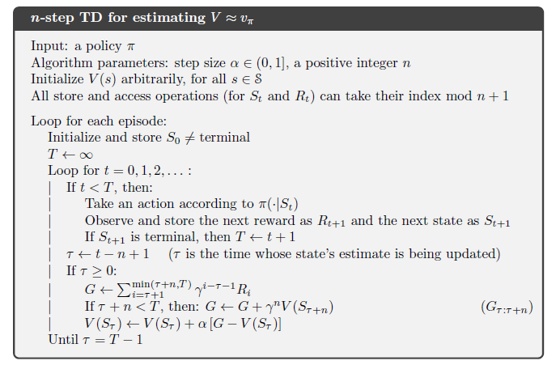
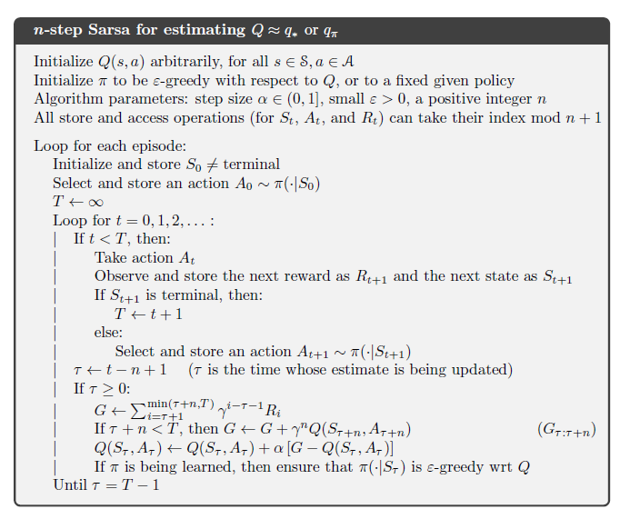

n-Step Bootstrapping
<< Notes || Date: 03rd May 2022
With one-step TD or TD(0) the same time step determines how often the action can be changed and the time-interval over which bootstrapping is done.
>> Ideally, Bootstrapping would work better if it is over a length of time in which a significant and recongnisable state change has occured. n-step bootstrapping enables it to occur over multiple time steps
n-step TD prediction
The methods that use n-step updates are still TD methods because they still change an earlier estimate based on how it differs from a later estimate. However, when these TD methods extends over n-step, it becomes n-step TD methods
in one-step updates, the target is the first reward plus the discounted estimated value of the next state, here then, we have one-step return as :
`G_(t:t+1) ≐ R_(t+1) + γV_(t)(S_(t+1))`
two-step return as :
`G_(t:t+2) ≐ R_(t+1) + γR_(t+2) +γ^2V_(t+1)(S_(t+2))`
n-step return as :
`G_(t:t+n) ≐ R_(t+1) + γR_(t+2) + ...... + γ^(n-1)R_(t+n) + γ^nV_(t+n-1)(S_(t+n))`
for all `n,t` such that `n≥1` and `0≤t<T-n`. Psuedo Code for n-step TD is given below:
Note : n-step returns for `n<1` involve future rewards and states that are not available at the time of tansition from `t` to `t+1`, but only after seeing `R_(t+n)` and computed `V_(t+n-1)`. n-step return uses the value function, `V_(t+n-1)` to correct for the missing rewards beyond `R_(t+n)`
The natural state-value learning algorithm for using n-step returns is thus :
`V_(t+n)(S_(t))≐V_(t+n-1)(S_(t)) + α[G_(t:t+n) - V_(t+n-1)(S_(t))]`
while the values of all other states remain unchanged: `V_(t+n)(S) = V_(t+n-1)(S)`, for all `s != S_(t)` . This algorithm is called n-step TD
An important aspect of n-step return is that their expectation is guaranteed to be a better estimate of `V_(π)` than `V_(t+n-1)` is, in a worst-state sense. That is, worst error of the expected n-step return is guaranteed to be less than or equal to `γ^n` times the worst error under `V_(t+n-1)`
`max_{x}[`𝔼`π` `[G_(t:t+n) | S_(t)=s] - V_(π)(s) ≤γ^n max_{s}[V_(t+n-1)(s)-V_(π)(s)]`
This is called error reduction property of n-step returns.
n-step SARSA
n-step of version of SARSA is called n-step SARSA. The main idea is to simply switch states for action (state-action pair) and then use `∈-greedy` policy. Here, we redefine n-step returns (update targets) in terms of estimated action-values
`G_(t:t+n)≐ R_(t+1) + γR_(t+2) + ..... + γ^(n-1)R_(t+n) + γ^n Q_(t+n-1)(S_(t+n),A_(t+n))`
with `G_(t:t+n) ≐ G_(t)` if `t+n ≥T` . The natural algorithm is then :
`Q_(t+n)(S_(t), A_(t)) ≐Q_(t+n-1)(S_(t),A_(t)) + α[G_(t:t+n) - Q_(t+n-1)(S_(t),A_(t))]`
with the values of all other states remain unchanged: `Q_(t+n)(s,a) = Q_(t+n-1)(s,a)`. Pseudo Code for it is given below
